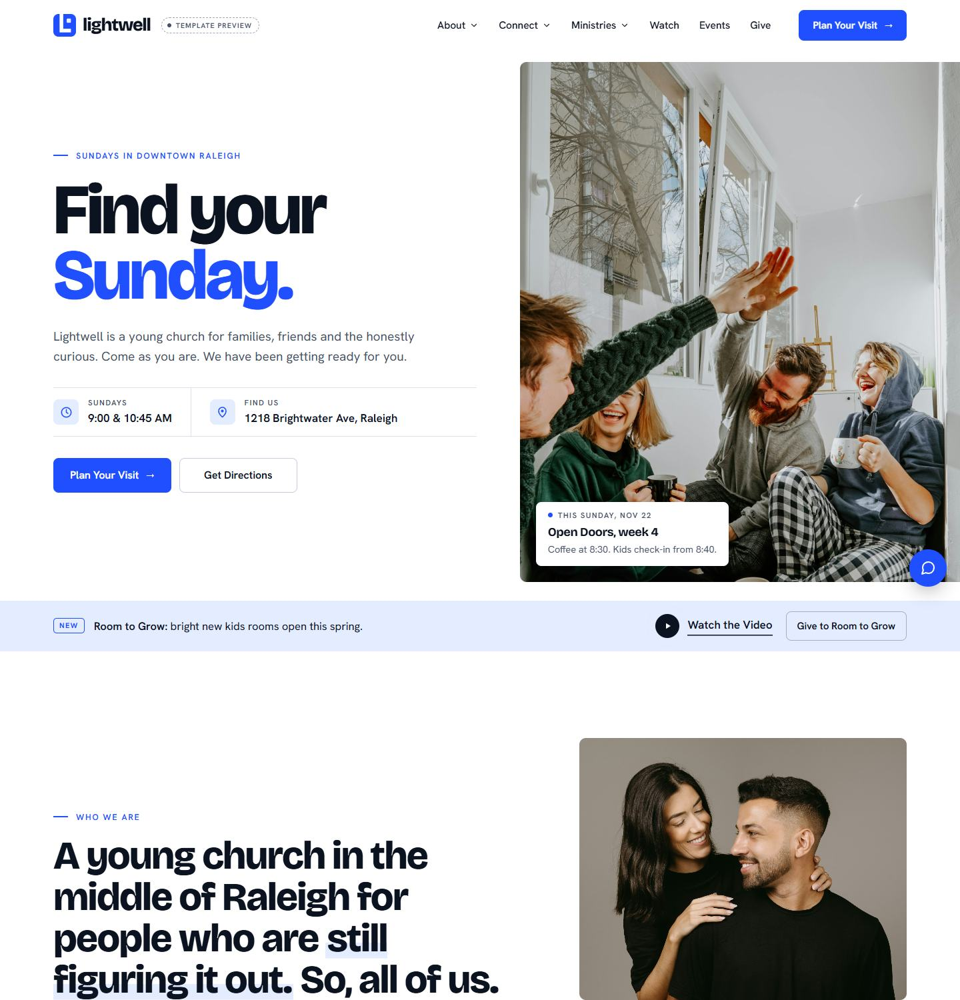
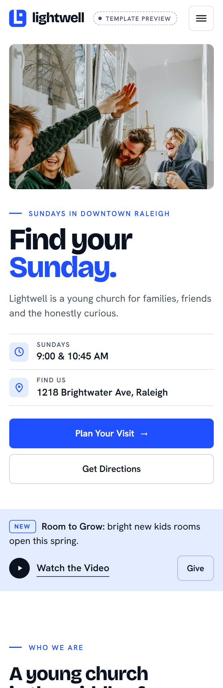
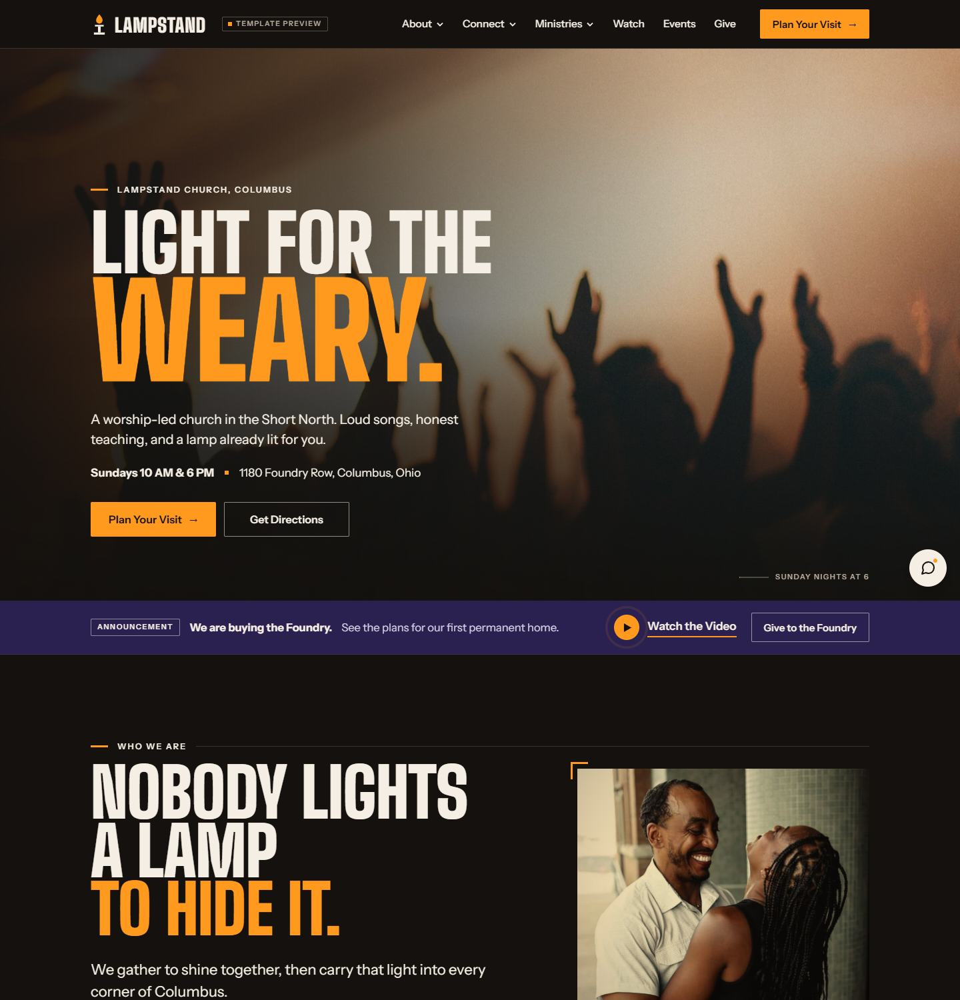
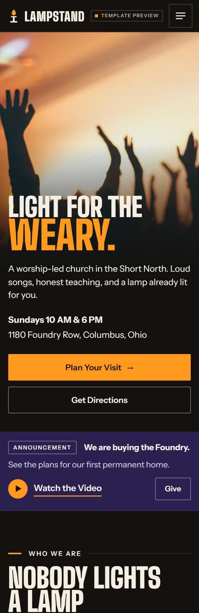
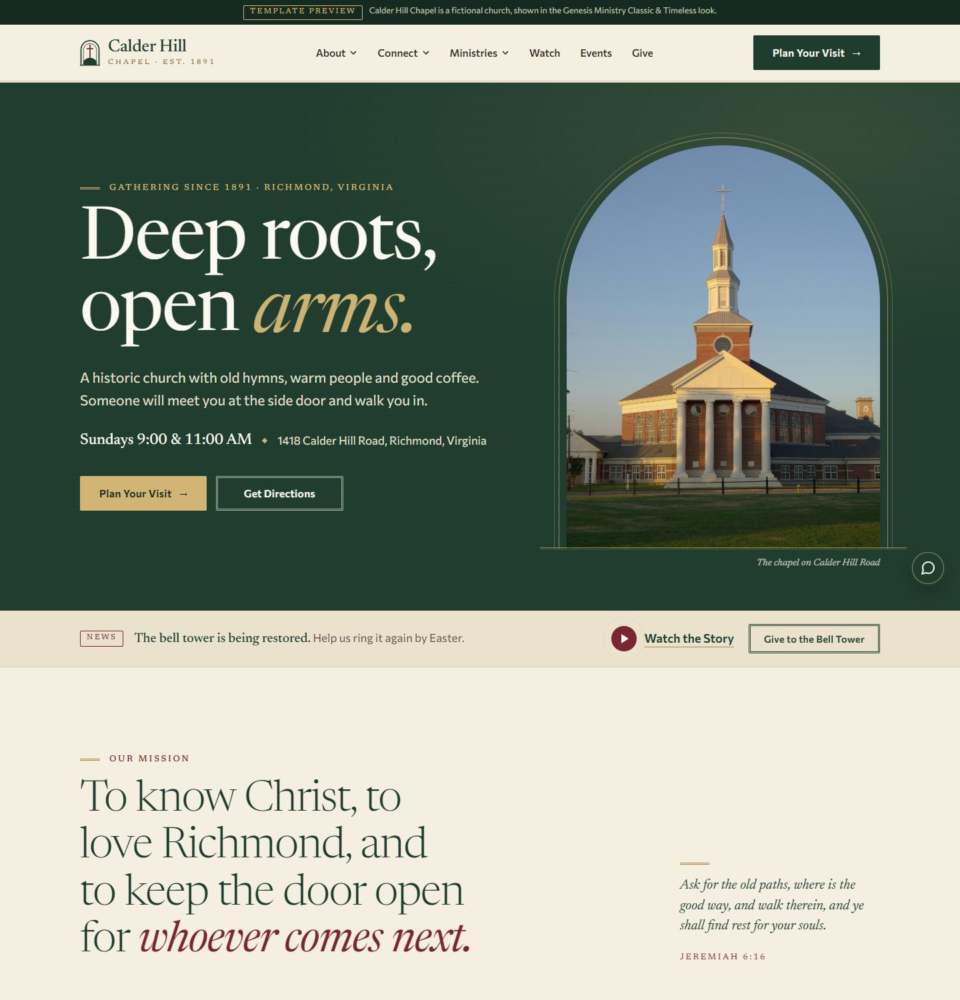
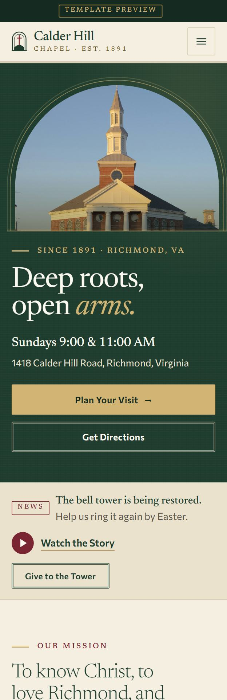
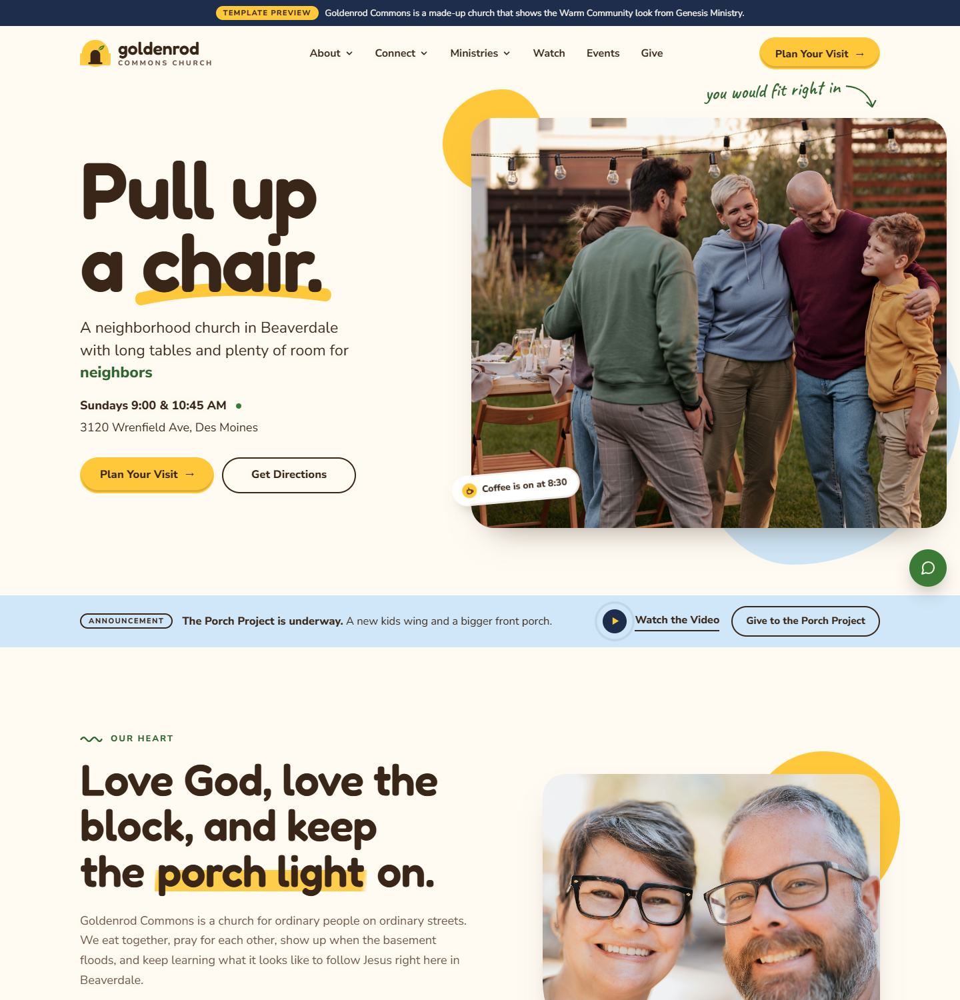
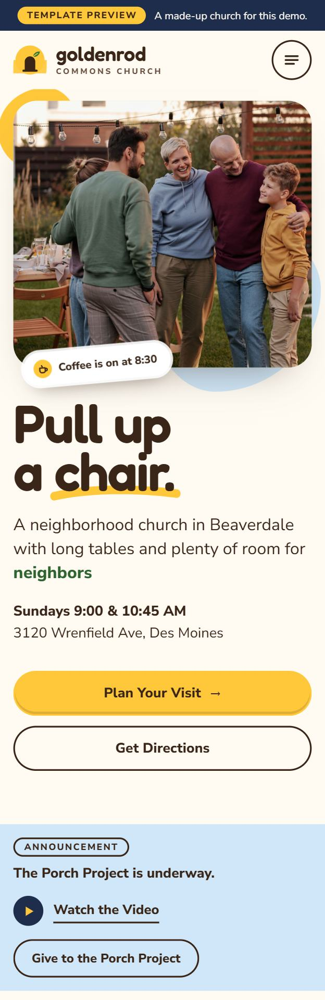

Edition 05Genesis Ministry templates
Four looks. One standard.
Every template is built to the same standard as our flagship church site: fast on phones, warm, clear about Sunday, and easy for a small team to keep fresh. Open any site and Hope will give you a short guided tour.
Four looks
Pick the look that sounds like your church.
Each look is a complete church website built to the same standard underneath. Open one and look around. Each is shown with a made up sample church.
-


Look 01Church plants and young families
Bright and Modern
Shown as Lightwell Church, Raleigh, NC. A made up church.
- Daylight White #FFFFFF
- Cloud #F4F7FC
- Sky #E4ECFF
- Lightwell Cobalt #1F4FFF
- Cobalt Press #1739CC
- Night Ink #0B1220
Type: Bricolage Grotesque and Hanken Grotesk
-


Look 02Youth heavy, worship led churches
Bold and Dark
Shown as Lampstand Church, Columbus, OH. A made up church.
- Kiln #14110E
- Soot #1F1A16
- Bone #F4EEE4
- Ash #B8AD9E
- Flare #FF9A1F
- Umber #4A2E0A
Type: Big Shoulders Display and Instrument Sans
-


Look 03Established congregations
Classic and Timeless
Shown as Calder Hill Chapel, Richmond, VA. A made up church.
- Forest #1F3D2F
- Deep Forest #152A20
- Parchment #F5EFE2
- Vellum #EBE2CE
- Ivory #FCF9F1
- Brass #A8843F
Type: Newsreader and Commissioner
-


Look 04Family and neighborhood churches
Warm Community
Shown as Goldenrod Commons Church, Des Moines, IA. A made up church.
- Porch White #FFFBF3
- Cocoa Ink #3A2618
- Sunflower #FFC83A
- Leaf #3B7A37
- Leaf Deep #2F6430
- Sky #CFE7F8
Type: Fredoka and Nunito Sans
What a church gets
One package, filled with your church's own story.
Your photos, your colors and your words. The back office comes with it depending on your plan.
01
A website
Every page a guest needs, in the look that fits you, built for phones first.
- One of four looks
- Your content and photos
- Clear on every phone
02
A brand board
Logo lockups, colors, type, photo direction and voice, so everything you post matches.
- Logo, color and type
- Voice and tone
03
A social plan
Who you are reaching, a weekly rhythm, a 30 day calendar and captions in your voice.
- Weekly rhythm
- 30 day calendar
04
Hope
An assistant that answers guests from your approved facts and hands prayer to real people.
- Answers from approved facts
- 988 and 911 in a crisis
05
The back office Depending on plan
Prayer, messages and spiritual gifts for each person, a shared staff inbox, and a church-wide gifts picture for the pastor. A front office for guests and a member app come with it too.
- Front office for guests
- Back office for care
- Member app
Customization beyond the template, such as new layouts or special features, is available for an additional cost.
Choose Your LevelThe platform
See what sits behind the website.
The front door opens every screen of Genesis Ministry with sample data. The journey shows how it all fits together.
-
Edition 05 · The front door
Genesis Ministry
Five doors: the front office, the back office, the member app, the journey and these templates. Draft levels and the rules that protect people.
-
Five diagrams · The journey
The Journey
One Sunday guest end to end, finding a church through launch, who sees what, what Genesis AI does and does not do, and what each level adds.


Genesis Ministry
See it with your church in mind.
Start the guided demo, or open the front door and choose the church and level to show.
Template previews use fictional churches and free stock photos. Photo credits live with each template.